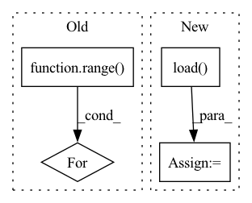

Pattern ID :873
Before Change
truth = token2str(seq["input_ids"], dataloader.tokenizer)
if args.wandb:
table = wandb.Table(columns=["Truth", "Prediction"])
for k in range( min([len(pred), args.test_samples])):
table.add_data(truth[k], pred[k])
wandb.log({"test/examples": table})
else:
print("\n%s\n%s" % (truth, pred))After Change
def train(args):
dataloader = Im2LatexDataset().load(args.data)
dataloader.update(**args)
valdataloader = Im2LatexDataset().load( args.valdata)
valargs = args.copy()
valargs.update(batchsize=args.testbatchsize, keep_smaller_batches=True)
valdataloader.update(**valargs)
device = args.deviceIn pattern: SUPERPATTERN
Frequency: 3
Non-data size: 4
Instances Fragment ID: 4279602
Project Name: lukas-blecher/latex-ocr
Commit Name: d52e43388fd9c01f33b5e03bcccbba0a0c8e51b5
Time: 2021-02-15
Author: luk.blecher@gmx.de
File Name: train.py
M Class Name: AnonimousClass
N Class Name: AnonimousClass
M Method Name: train(1)
N Method Name: train(1)
M Parent Class:
N Parent Class:
M File Name: train.py
N File Name: train.py
M Start Line: 21
M End Line: 61
N Start Line: 24
N End Line: 54
Before Change
import matplotlib.pyplot as plt
for i in range( 100):
plt.plot(xs[i, 1:, 0], xs[i, 1:, 1])
plt.show()
return xs, usAfter Change
path = dir_path+"/../../datasets/double_integrator/"
with open(path+"xs.pkl", "rb") as f:
xs = pickle.load( f)
with open(path+"us.pkl", "rb") as f:
us = pickle.load(f)
Fragment ID: 4279605
Project Name: mit-acl/nn_robustness_analysis
Commit Name: c9b51e13d331027e4154999bc43026a9daf05ae0
Time: 2021-11-09
Author: mfe@mit.edu
File Name: nn_closed_loop/nn_closed_loop/utils/nn.py
M Class Name: AnonimousClass
N Class Name: AnonimousClass
M Method Name: load_data(1)
N Method Name: load_data(0)
M Parent Class:
N Parent Class:
M File Name: nn_closed_loop/nn_closed_loop/utils/nn.py
N File Name: nn_closed_loop/nn_closed_loop/utils/nn.py
M Start Line: 91
M End Line: 113
N Start Line: 96
N End Line: 126
Before Change
num_videos
) -> None:
model.load_actor(log_dir)
for i in range( num_videos):
env = Monitor(
env_fn(),
directory=f"{log_dir}/videos/{i+1}",
force=TrueAfter Change
model,
log_dir,
) -> None:
model = model.load( os.path.join(log_dir, "networks.zip"))
episode_rewards, episode_lengths = evaluate_policy(
model,
env_fn(),
n_eval_episodes=5, Fragment ID: 4279599
Project Name: zhihanyang2022/off-policy-continuous-control
Commit Name: 454ab46f5e7f237c6ab0bba953c6d1d28c10922b
Time: 2021-05-29
Author: yangz2@carleton.edu
File Name: offpcc/basics/run_fns_sb3.py
M Class Name: AnonimousClass
N Class Name: AnonimousClass
M Method Name: load_and_visualize_policy(3)
N Method Name: load_and_visualize_policy(4)
M Parent Class:
N Parent Class:
M File Name: offpcc/basics/run_fns_sb3.py
N File Name: offpcc/basics/run_fns_sb3.py
M Start Line: 250
M End Line: 259
N Start Line: 242
N End Line: 251